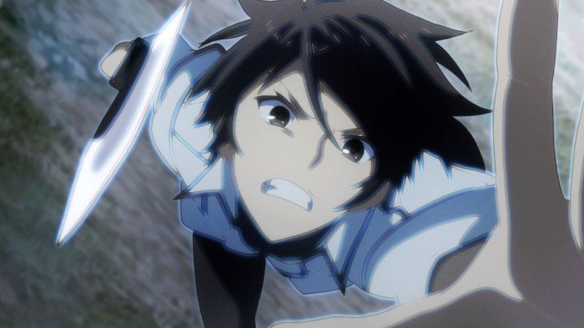

"Chivalry of a Failed Knight," to this day, years after the show broadcast in 2015, still has fans with fond feelings of the property. Even so, I was fully aware that it was, at most, a standard and average action anime, and expected that when I began watching. The first couple episodes don't do it much favors though: what I saw was one of the most generic scenarios I had ever bothered to sit through. Set in an alternate modern or futuristic world, Ikki Kurogane is a student with the semi-common magical ability of a "Blazer," knights who can spawn swords from their souls and utilize fantastical abilities to use in combat. Kurogane strives to become an official knight, but the academy he's enrolled in, due to some unspecified feud from his family, does its utmost to block him. He is enrolled, but is given the lowest ranking score ("F"), and is barred from attending classes for a full year, until administration happens to change and new representitives give him the opportunity. Finally a proper student, despite having the nickname of "the worst one," Kurogane must compete in the school's fighting tournament to prove his skills; due to his already low-ranking situation, not reaching the top will mean he fails to graduate. To top things off, his roommate for the year is a girl, the princess Stella Vermillion. She's a beautiful "A-rank" student, one of the best fighters in the school, but with a firey temper, and immediately doesn't get along with Ikki. After having a mock-battle to decide if Ikki should be kicked out of the room (or whether one must be the "slave" to the other as "master"), Ikki wins, and Stella begins to respect his skills and determination. The classic example of a "tsundere" archtype, Stella grows to love him, as does virtually every other woman in the school, serving as background fodder on Ikki's quest to become the best, in a series of fights full of random magical weapons and spells, calling out each move with a complicated name, figuring out strategies that boil down to brute strength, and a variety of seemingly irrelevant but self-important background characters watching each match with intention.... what I described fits the summary of seemingly half of all anime produced. "Chivalry of a Failed Knight" struggles to convince that it has its own identity. Even the original awkward-English title card, "A Tale of the Worst One," mismatches with the official English release, but both are unremarkable. A handful of story-related issues also prevent the plot from being satisfying: Kurogane's relationship with his family and father does briefly get addressed, but the reason behind his hard upbringing is superficial and frustrating. A handful of deeper character motivations are hinted at, but not explored at all, desparately requiring a second season that will never come (a quick read through the Wiki sites suggest many interesting developments later in the light novel series, worth following for fans of the show). Despite being largely mediocre, "Chivalry of a Failed Knight" does a lot of things right. The relationship between Ikki and Stella grows quickly into dating, confessions of love, and even discussions about sex and marrage, all within 12 episodes. All entertainingly so rather than realistically, but with multiple other love interests to get jealous over, a lesser show wouldn't have allowed Ikki to commit to one, teasing the audience indefinitely before even giving a kiss. They're a cute couple one can't help but smile for. Their love ultimately becomes a big factor in the plot, as much or moreso than the tournament. And yes, if you're looking for sexy fanservice, the show pushes hard with that, with plenty of risque moments, much of it from Stella, awkard and funny and cute, as she internally comes to terms with her true feelings and what she wants.  Even though Ikki Kurogane's quest doesn't have a great reason to why it's been made so difficult, watching a hero's journey of artificial-difficulty is riviting. Ikki remains determined, not allowing anyone to kick him down and lock him out of his opportunity... or rather, he does, to avoid unnecessary confrontation that could be used as an excuse to expell him, and remains confident and patient that his time will come. He also remains kind, both to his fellow students and foes, whomever he talks to (and the minor antagonists who do appear in the show are nasty jerks and bullies, more dispicable than normal). Much of it is par for the course, and yes, Ikki is seemingly invincible, like any male protagonist in an anime. But he fights hard to be there.The action scenes are also a bit better than average. Studio Silver Link might not have the talent to make the series look better than the average modern anime, but they tried their best to animate the fights with extra attention and flair. The fights are engaging, exciting to watch, and with the ever-present feeling of danger (students commonly get slashed in battle, and one confrontation off campus leads to a foe loosing a limb; it's a miracle more students haven't died in these battles!). The animation is a small step above average for broadcast anime, when just about every other element, from the visual design to the music, is memorable, but throughouhly average. Sentai Filmworks' English dub is a mixed bag. I did grow to like the acting for the two leads, but most other side characters vary wildly in quality, with poor attempts to make characters sound more like teenagers, or with extra curse words in dialogue to seem more edgy. I grew to be fine with it, and figure most modern English dubs to be pretty good even at the worst of times, but this was definitely a lesser output.Not unlike the themes and troubles driving the main character, "Chivalry of a Failed Knight" is marred by properties that make it seem thoroughly average, even mediocre. A handful of strong elements, namely good animation and character-driven plot and relationships, help push it to be worth a little more. That makes it one of the slightly better choices of the genre, and a fun diversion.
- "Ani" More reviews can be found at : https://2danicritic.github.io/ Previous review: review_Children_Who_Chase_Lost_Voices Next review: review_Code_Geass_-_Akito_the_Exiled